“风筝见证，我要去彩虹海！”整部片子的起点，是一只被放上天的风筝。没有飞船的人，先证明自己配得上出发。
01 — 片头曲 ·《再飞行》
把 91 秒
还给 2011 年
《再飞行》响起来的时候，我们都还相信宇宙尽头有一片海。
下面的画面全部来自这条片头曲，没有一张是画的。
或直接点右下的纸飞机，一站一站看下去
02 — 世界观
宇宙是一片
可以飞过去的海
《星游记》讲的是一群人把“不可能”当作起跑线的故事。飞行不是交通工具，是一种态度：只要有坐标，就敢往星星的方向走。
星学会负责把星图读出来，飞船负责把人送出去，而彩虹海——那是所有人共同的目的地，也是所有人共同的借口。
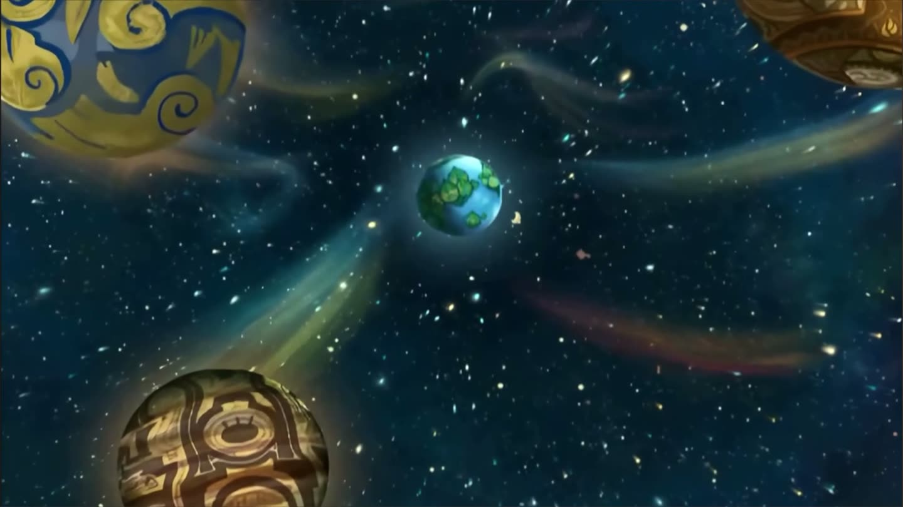
03 — 人物 · 麦当
麦当
MAI DANG
「真正相信奇迹的家伙」
-
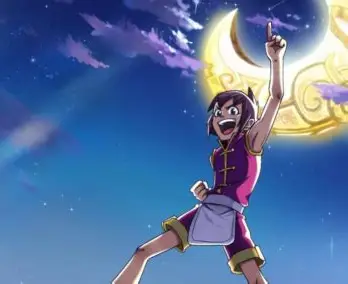
十年前的约定
父亲麦林出海去找彩虹海，走前只留下一句话。麦当把那句话当成地址，一记就是十年。
-
风筝见证，我要去彩虹海
没有飞船，就先放一只风筝。他用最土的办法证明自己能飞，然后真的出发了。
-
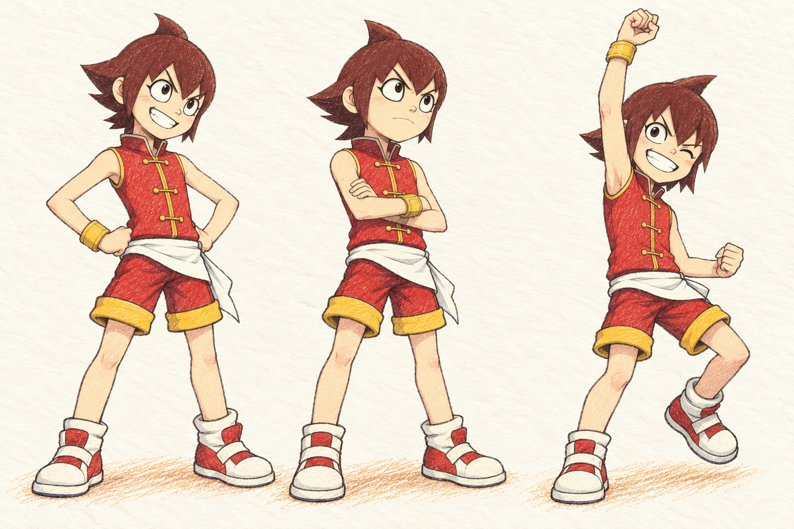
遇见咕咚与笛亚
一个要回自己的星球，一个要把星图读完，一个只想去彩虹海。三个理由，同一条航线。
-
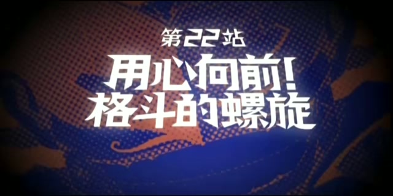
用心向前
“把不可能当成起跑线”——这句话不是口号，是他每一站都在做的事。
04 — 人物 · 咕咚
咕咚
GU DONG
「叫我国王 咕咚国王」
-
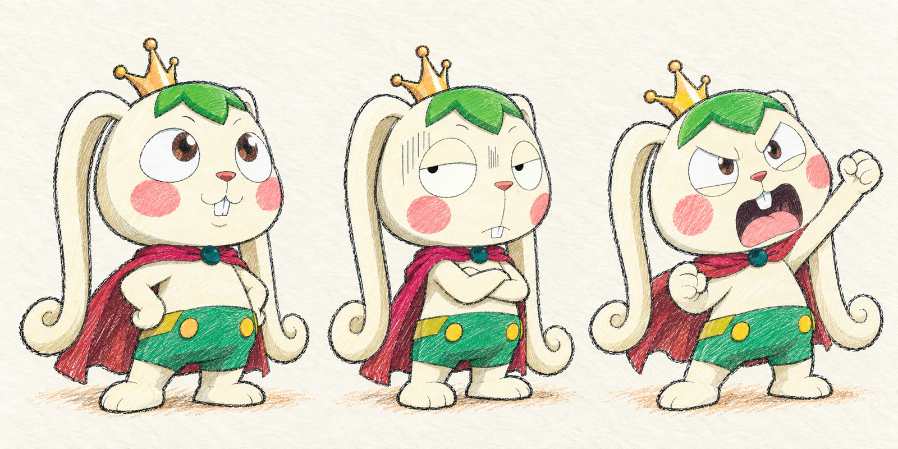
王冠是真的，国家没了
白兔、绿发、一顶小王冠。他坚持别人叫他“咕咚国王”，因为那是他仅剩的东西。
-
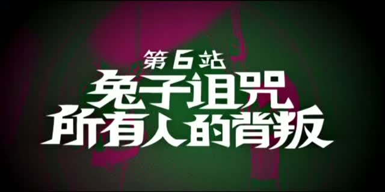
所有人的背叛
“兔子诅咒，所有人的背叛”。王座塌下来的时候，站在他身边的一个人也没有。
-
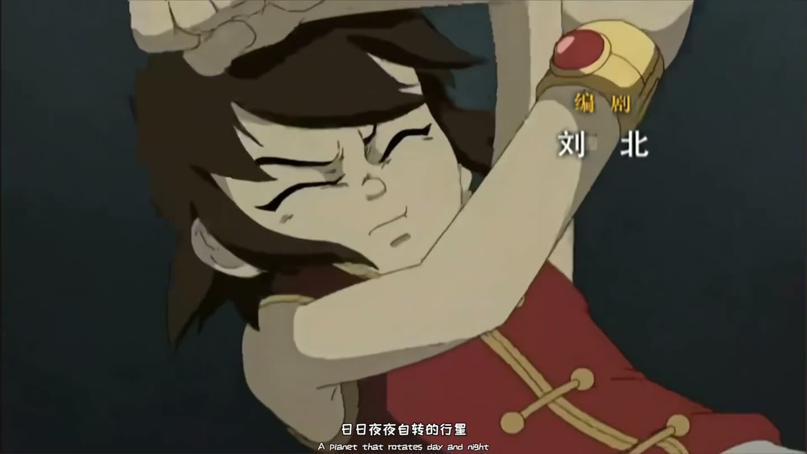
和麦当做一笔交易
他要回自己的星球，麦当要去彩虹海。两条路刚好同向，于是他交出了飞船。
-
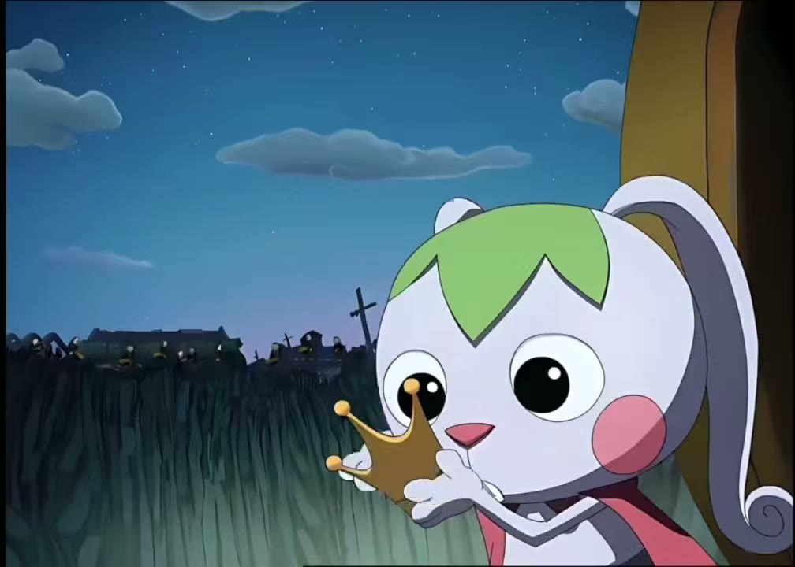
国王的返航
他不是去冒险，他是去把自己的国家从诅咒里赎回来。
05 — 人物 · 笛亚
笛亚
DI YA
「相信奇迹的人，本身就和奇迹一样了不起。」
-
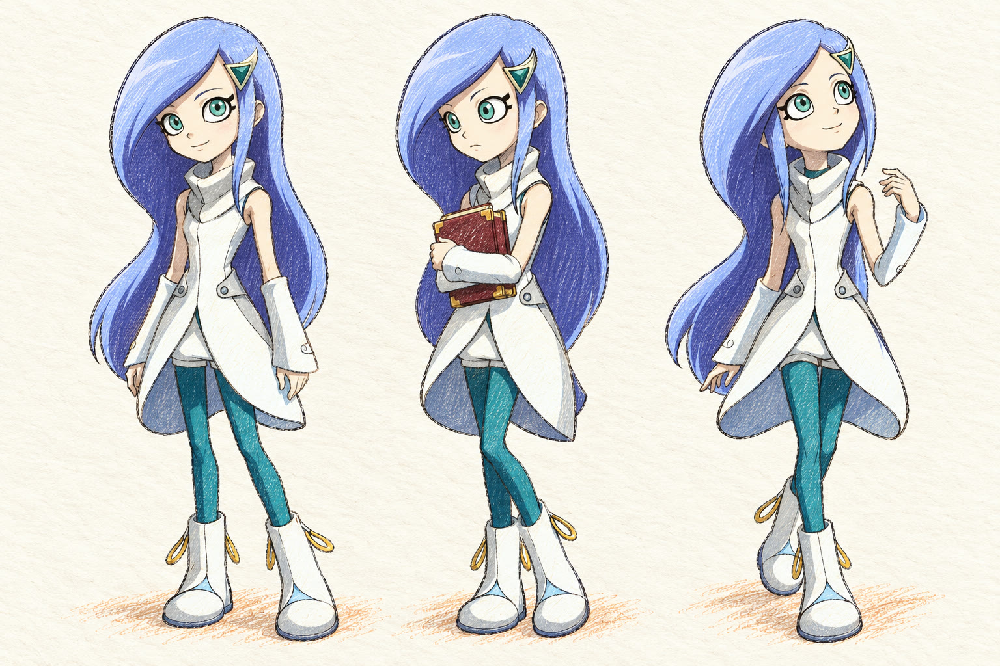
把星图抱在怀里
那本厚书是星学会留下的东西。她走到哪里都带着，像带着一整个组织。
-
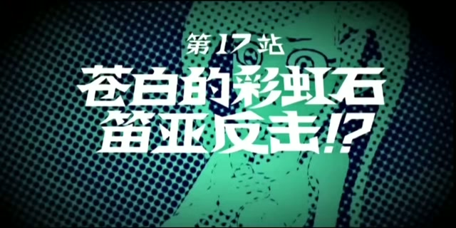
苍白的彩虹石
“苍白的彩虹石，笛亚反击!?”——第一次，她自己站到了前面，没有再等人来救。
-
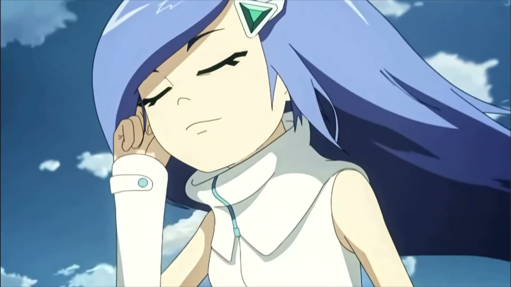
航线由她念出来
飞船负责飞，麦当负责闯，笛亚负责告诉他们星星在哪。三个人缺一不可。
-
她和奇迹一样了不起
“相信奇迹的人，本身就和奇迹一样了不起。”这句台词，她比谁都有资格说。
06 — 人物 · 米龙
米龙
MI LONG
「跪在地上的命运了吧」
-
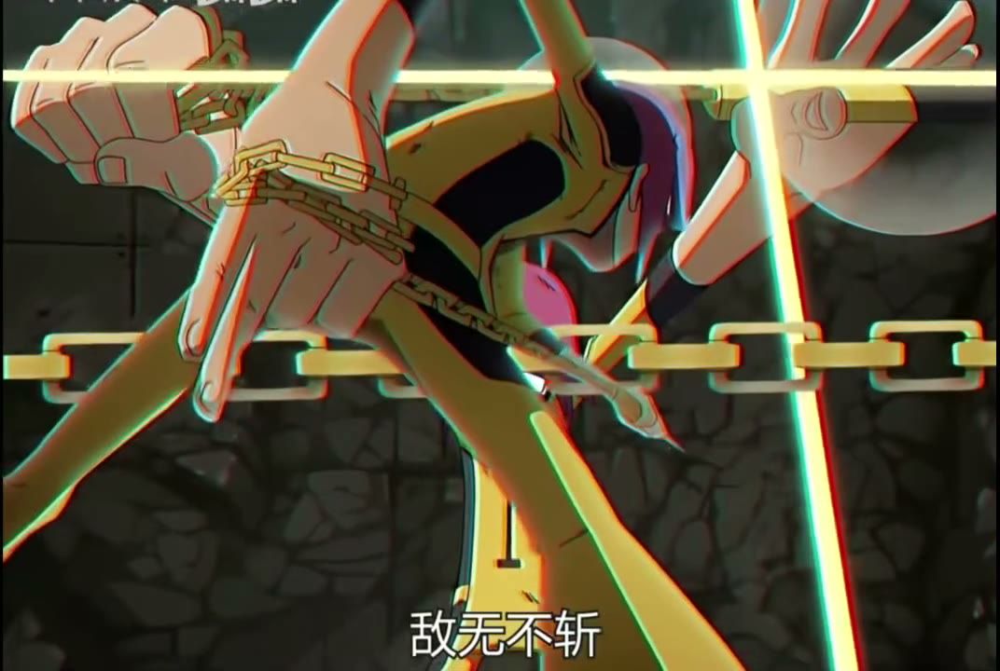
一道不肯低头的剪影
片头曲里他缠着锁链、戴着一副不摘的墨镜，站在所有人都不愿意站的位置上。
-
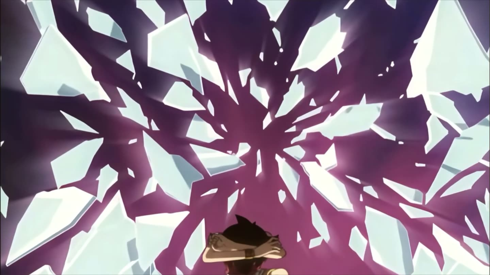
刀比话快
“斩无不断”“金色天际线”——他的台词全部是动词，没有一句解释自己。
-
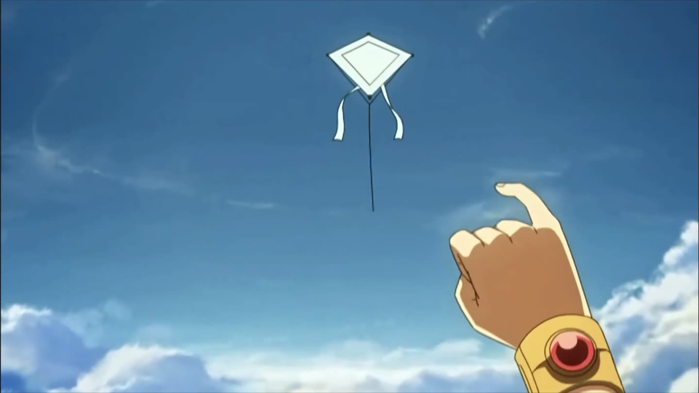
他不跪
“跪在地上的命运了吧”——这句话是问句，也是宣判。他从来不打算接受命定的位置。
-
关于他，片子说得很少
这一页只写片头曲里看得见的部分。剩下的留给正片，不替原作补台词。
07 — 事件 / 第 26 集开场
26 张标题卡，7.79 秒
这是第 26 集开头那条标题切片：第 1 站到第 26 站，26 张卡一张不少。完整放入，未裁剪、未抽帧替换；右边按时间码排好，播到哪一张就亮哪一条。
时间码站 / 章节标题
“兔子诅咒，所有人的背叛。”咕咚的过去在这里被翻开：一个国家、一群人，和一个只剩王冠的国王。
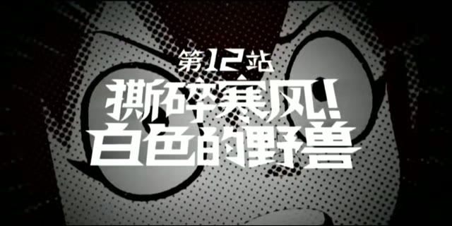
“撕裂寒风！白色的野兽。”走到这里，冷已经不是天气，是拦在航线上的东西。
“苍白的彩虹石，笛亚反击!?”被保护的人第一次自己出手，问号比感叹号更响。
“用心向前！格斗的螺旋。”越往后打，越不像在打人，像在跟命运掰手腕。
五张放大卡与上方播放器同源：都取自第 26 集开场那条 7.79 秒切片（第 1、6、12、17、22 站）。
08 — 尾声
如果你也记得那句「再飞行」，
就回去看一遍。
没看过的人，从第 1 集开始；看过的人，知道自己该从哪一集开始。
在 B 站看这条片头曲 →- 片源
- BV1Vt4y1S7fJ
- 时长
- 91.393 s
- 画面
- 1920 × 1080 / 30 fps
- 人物片段
- 4 段，全部来自原片
第 1 站到第 26 站，每一站都有名字；
只有彩虹海，一直没写上门牌号。